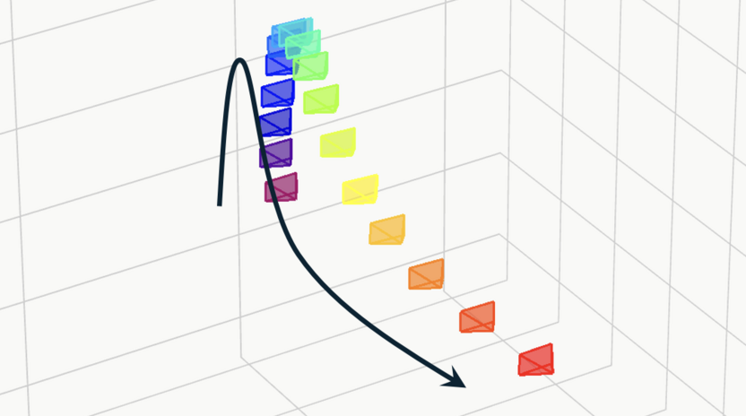
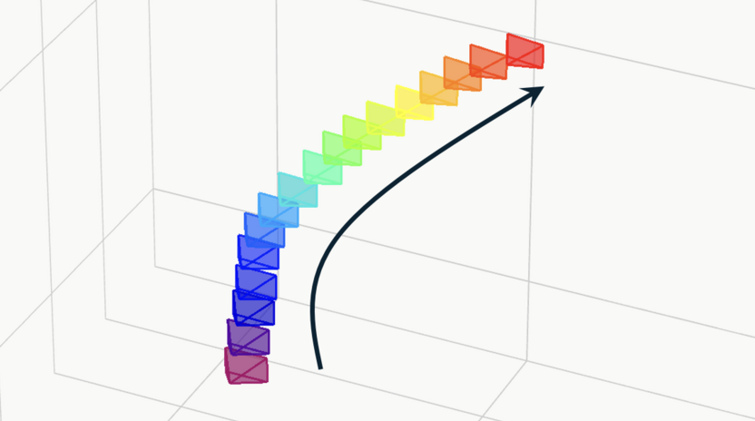
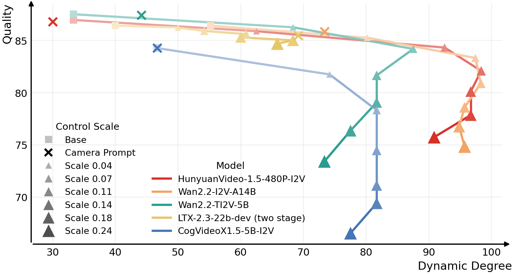
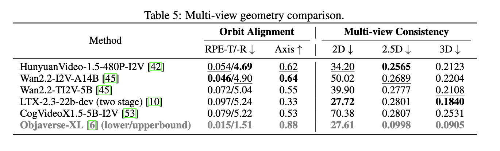
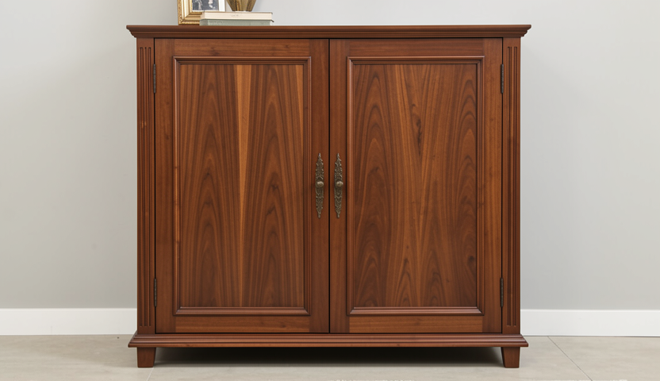
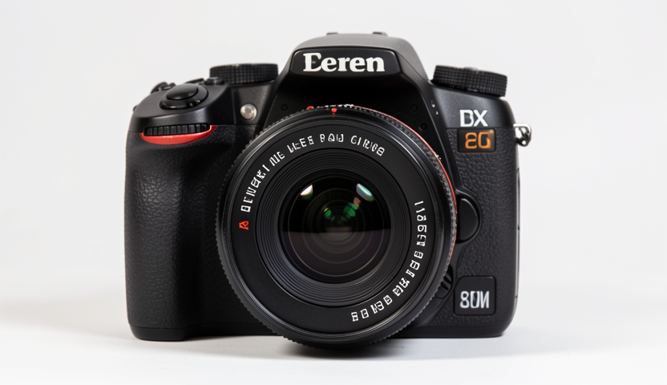

We show that camera control in video generation need not be treated as an implicit learning problem. Instead, it is more naturally solved through a displacement-field guided generation.
Using our method, we can control video camera motion without any finetuning.
Camera Control
Multi-view Video Generation
Our method can guide base models generate pseudo multi-view videos (results generated using Wan2.2-I2V-A14B).
Basic and Complex Trajectories



Camera control results of our method, videos generated using Wan2.2-I2V-A14B.
Probing into Camera Control Capabilities
As our method controls video camera motion without any finetuning, it can serve as a probe to study the camera control capabilities of video foundation models.
Using this probe, we identify several similarities and differences across popular video base models. We further benchmark their multi-view generation capability for their potential use in 3D/4D tasks.


Multi-view Probing Results

Motion: Arc right.

Motion: Arc right.

Motion: Arc right.
Motion Mode Shift
As camera motion strength increases, HunyuanVideo-1.5 shifts from smooth motion to abrupt transitions,
while Wan2.2-I2V-A14B exhibits a later mode shift. LTX-2.3 shows little noticable camera motion.
Failure Cases
From left to right: wrong dynamics, motion mode shift, unrealistic transitions;
content change, wrong motion, dragging effect.
Qualitative Comparison with Other Methods
Truck Right
Prompt: A 3D model of a 1800s victorian house.
Pedestal Down
Prompt: An astronaut is riding a horse in the space in a photorealistic style.
Zoom In
Prompt: A panda playing on a swing set.